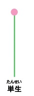
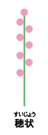

無限花序
花が花軸の下部から上方へ順次咲いていくもの
画像
説明文
代表

枝分かれしない単一の茎の先端に1個だけの花をつける花序
チューリップ、ケシ、カタクリ

花軸が長く、柄のない花が穂状に並んでいる花の並び方。無限花序の一種
麦やイノコズチ、オオバコ、ヒトリシズカ、ミズヒキ、ワレモコウ
付け根から先へ、あるいは周りから中心部へ咲いてゆく無限花序のひとつで、柄のある小花が長い円錐形または円柱形に並び、付け根から咲いていくもののこと
フジ、ウワミズザクラ、ヒヤシンス、クララ、スズラン
有限花序
花が花軸の頂部から下方へ、または中心から外側へと順次咲いていく花序の類型です。最後に生じた頂部の花がまず咲いて、花の数を限定するので、有限と呼ばれます。 有限花序の例としては、次のようなものがあります。 ハコベ\n アマナ クマガイソウ スイレン科の花 カタクリ（ユリ科）の花 ハス科の花 スミレ属（スミレ科）の花 コブシ（モクレン科）の花 バイモ（ユリ科）の花 ツバキ（ツバキ科）の花